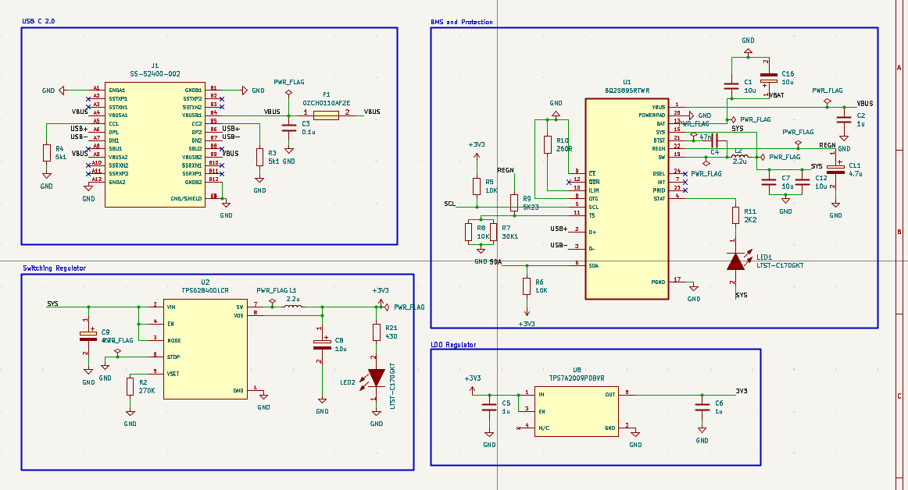
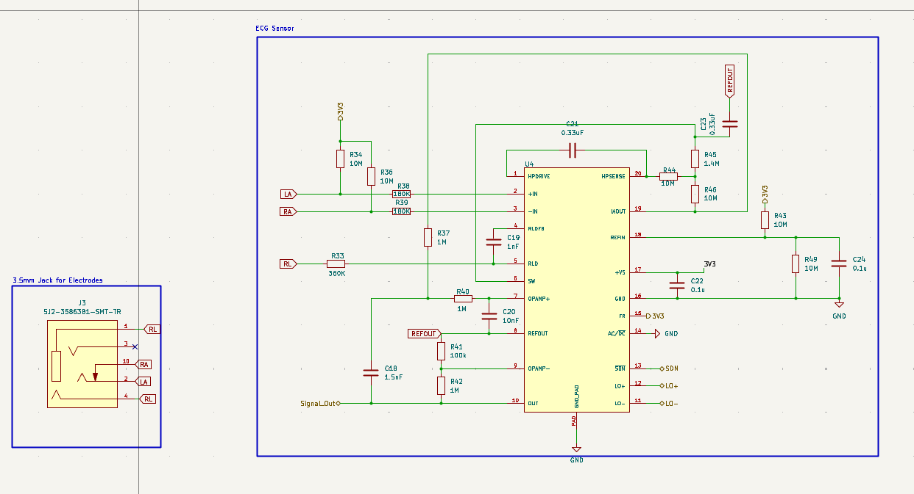
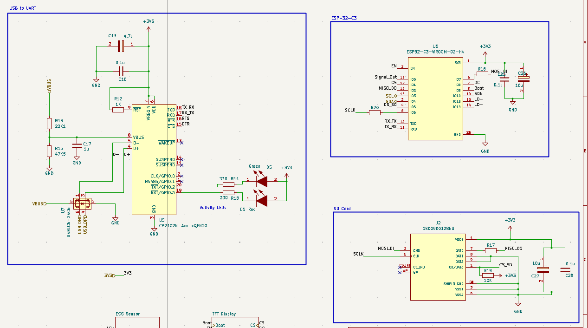
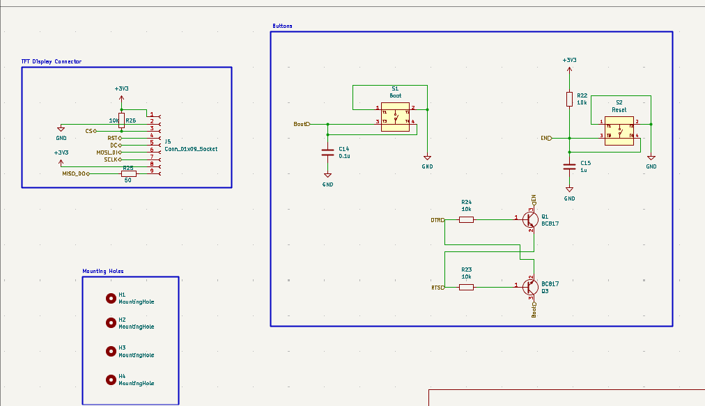
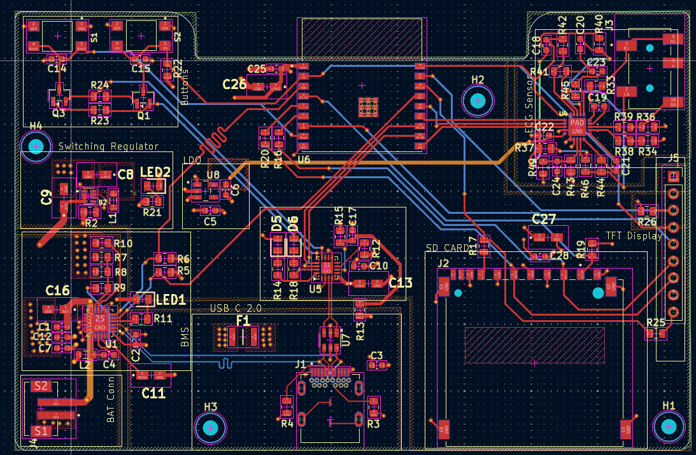
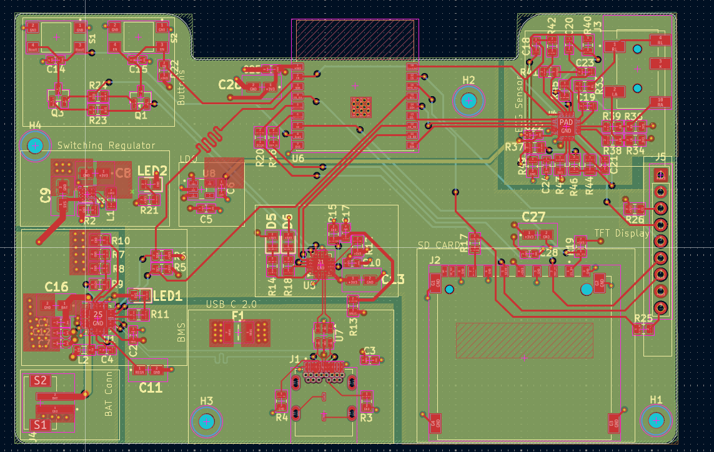
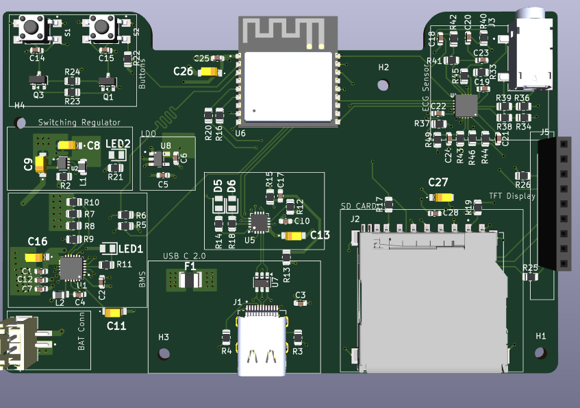
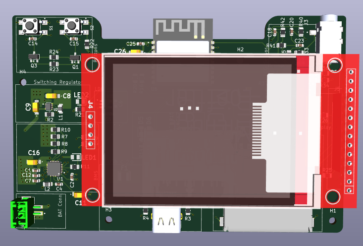

A battery-powered ESP32-C3 biomedical board that picks up the heart's electrical signal through a 3-electrode cable, conditions it with an AD8232 analog front-end, draws the live waveform on an SPI TFT display and logs it to a microSD card — powered by a USB-C input and a switch-mode Li-ion battery management system on a 4-layer PCB.
This project is a compact, battery-powered ECG (electrocardiogram) monitoring board built around the ESP32-C3. Three electrodes connect through a standard 3.5 mm jack into an AD8232 single-lead heart-rate analog front-end, which amplifies the few-millivolt signal coming off the body and filters out motion artefacts, electrode drift and mains interference before handing a clean waveform to the ESP32-C3's ADC. The microcontroller renders that waveform live on an SPI TFT display and simultaneously writes the samples to a microSD card for later review. Power comes from USB-C or a single Li-ion cell, managed by a BQ25895 switch-mode charger that charges the battery and runs the board at the same time, followed by a buck converter for the digital rail and a separate low-noise LDO for the analog front-end. An onboard CP2102N USB-to-UART bridge with auto-reset circuitry allows one-cable firmware uploads, and the whole design is routed on a 4-layer PCB with a dedicated ground plane and length-tuned USB routing.
Power enters through the USB-C receptacle (J1), where CC pull-down resistors identify the board as a sink so a USB-C host applies bus voltage, a resettable PTC fuse (F1) limits fault current, and a USBLC6-2SC6 array (U7) clamps ESD strikes on the data lines. VBUS then feeds the BQ25895 (U1), a synchronous switch-mode charger rather than a linear one, so charging stays efficient and the IC stays cool. Its integrated buck stage, built around the switching node and inductor L2, steps the input down to charge a single Li-ion cell connected at J4, while its power-path management keeps the SYS rail alive directly from USB — the board therefore runs and charges at the same time, and switches over to the battery without a glitch when the cable is pulled. A thermistor divider on the TS pin lets the charger pause charging if the cell gets too hot, a programming resistor sets the input current limit, and the D+/D− lines let it detect what kind of USB adapter is attached so it can safely draw more current from a charger than from a data port. Charge and fault states are reported both on LED1 and over I²C, so the ESP32-C3 can read battery status and reconfigure the charger in firmware.
The SYS rail then feeds the TPS62840 (U2), a high-efficiency synchronous buck converter chosen for its very low quiescent current, which generates the main 3.3 V digital rail for the microcontroller, display, microSD card and USB bridge; LED2 confirms the rail is live. Because a switching regulator inevitably puts ripple on its output and an ECG front-end works with signals of only a few millivolts, the digital rail is not used for the analog section. Instead it is passed through a TPS7A2009 low-noise LDO (U8) to produce a separate, quiet analog supply dedicated to the AD8232. This two-stage arrangement keeps the efficiency of a switcher where the current is high and the noise rejection of a linear regulator where the signal is delicate.

The heart of the design is the AD8232 (U4), an integrated single-lead heart-rate front-end. Electrodes are wired in through a 3.5 mm jack (J3), with the right-arm and left-arm electrodes feeding the differential inputs and the right-leg electrode acting as the drive reference. Series resistors on both input lines, together with high-value bias resistors, protect the inputs and set the DC bias point while the electrodes float on the body. The chip's instrumentation amplifier takes the tiny voltage difference between the two arm electrodes and rejects everything common to both of them — mains hum and body-coupled noise in particular — which is exactly what makes a usable trace possible from a signal this small.
Around that core amplifier, the external passives configure the signal chain. The high-pass feedback network on the HPDRIVE/HPSENSE pins removes electrode half-cell offset and the slow baseline wander caused by breathing and movement, so the trace stays centred on screen instead of drifting off it. The uncommitted operational amplifier is wired as an active low-pass filter to strip high-frequency and EMI content above the ECG band, and its gain sets the final signal swing so the waveform uses as much of the ESP32-C3's ADC range as possible. The right-leg drive amplifier feeds an inverted version of the common-mode noise back into the body through the RL electrode, actively cancelling mains interference at the source. A reference buffer generates the mid-supply level the whole single-supply chain sits on, so the negative half of the waveform is preserved. Finally, the lead-off detection outputs (LO+/LO−) flag a disconnected or dry electrode, and the shutdown pin lets firmware power the front-end down between recordings to save battery.

The ESP32-C3-WROOM-02-H4 module (U6) runs the whole system. Its ADC input samples the conditioned waveform coming out of the analog front-end, two GPIOs monitor the lead-off flags so the firmware can warn the user when an electrode falls off, and another GPIO drives the front-end's shutdown pin. An I²C pair links the processor to the battery charger for live battery and charging status, while a shared SPI bus — clock, MOSI and MISO, with small series damping resistors to soften the fast edges and keep ringing off the lines — serves both the display and the microSD card, each selected by its own chip-select line so the two peripherals take turns on the same bus.
The microSD socket (J2) is wired in SPI mode, giving the board removable, effectively unlimited storage for recorded ECG sessions; local decoupling sits right at the card and a pull-up holds the card's chip select in a defined state during power-up. Programming is handled entirely onboard by the CP2102N USB-to-UART bridge (U5), which takes VBUS and the USB data pair straight from the connector and translates them into the serial lines connected to the module's UART. A pair of BC817 transistors (Q1, Q3) sits between the bridge's DTR/RTS handshake lines and the module's enable and boot pins; wired in this cross-coupled arrangement they automatically pulse reset and hold the boot pin low at exactly the right moment, so a firmware upload runs from one USB-C cable with no button presses. Manual Boot (S1) and Reset (S2) switches remain on the board as a fallback, and green/red activity LEDs give a visual indication of serial traffic in each direction.

A 9-pin header (J5) carries the SPI TFT display: chip select, reset and a data/command line alongside the shared clock and data pair, plus the 3.3 V supply and ground. The data/command line tells the display controller whether an incoming byte is a command or pixel data, the reset line guarantees a clean controller start-up, and a pull-up holds chip select inactive until the ESP32-C3 takes control of the bus so the display does not respond to traffic meant for the microSD card. Firmware uses this interface to draw the scrolling ECG trace, the heart-rate figure and status indicators such as electrode-off warnings and battery state.
The same sheet holds the user controls and the automatic programming circuit: Boot (S1) and Reset (S2) tactile switches with RC debouncing for manual bootloader entry, and the two BC817 transistors driven from the USB bridge's DTR and RTS lines that sequence the module into download mode on their own. Between them, the board supports both hands-free uploads over USB-C and the manual recovery route if a firmware image ever leaves the module unresponsive.

The board is routed as a 4-layer stack-up: signal traces on the top and bottom layers, a continuous ground plane on an inner layer to give every return path a short, uninterrupted route, and an inner power layer for distributing the system and 3.3 V rails. The floorplan separates the design by function, with the schematic's blocks preserved on the copper: the USB-C input, charger and switching regulator are grouped along one side, the ECG front-end is placed in its own quiet corner as far as possible from the switching node and inductors, and the display and microSD interfaces sit together near the board edge where their connectors land.
Around the ESP32-C3 module, a keep-out region is cleared of copper on every layer beneath the antenna and placed against the board edge so the RF pattern is not detuned. The USB data lines are routed as a differential pair with a short serpentine section length-tuning the two traces to match, keeping the pair balanced for reliable enumeration. Decoupling capacitors are placed tight against the supply pins of the module, charger, regulators and analog front-end, the switching regulators' input/output loops are kept small to limit radiated noise, and the analog rail is routed away from digital traffic so switching activity does not couple into the ECG signal. Mounting holes at all four corners anchor the board and carry the standoffs that hold the TFT display above it.




Bringing a biomedical analog front-end, a colour display, removable storage and a switch-mode battery system onto one small 4-layer board made for a genuinely portable, self-contained ECG monitor. The interesting part of the design was the tension between the two halves of it: a switching charger and buck converter on one side, drawing real current and generating real noise, and a front-end on the other side working with signals thousands of times smaller. Solving that with a split supply, a dedicated low-noise linear rail, careful physical separation and a solid ground plane was the core lesson. Along the way the project built practical experience in instrumentation amplifier and filter design, Li-ion power-path charging, shared SPI bus design across multiple peripherals, USB-C input protection, and RF-aware, length-matched routing on a multi-layer stack-up.